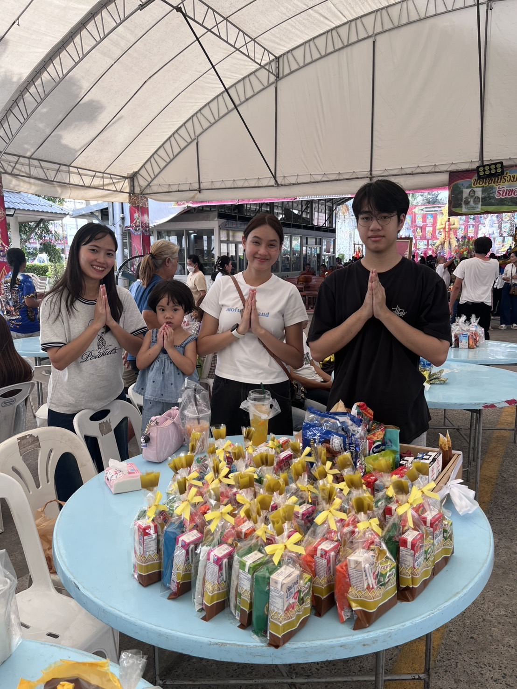
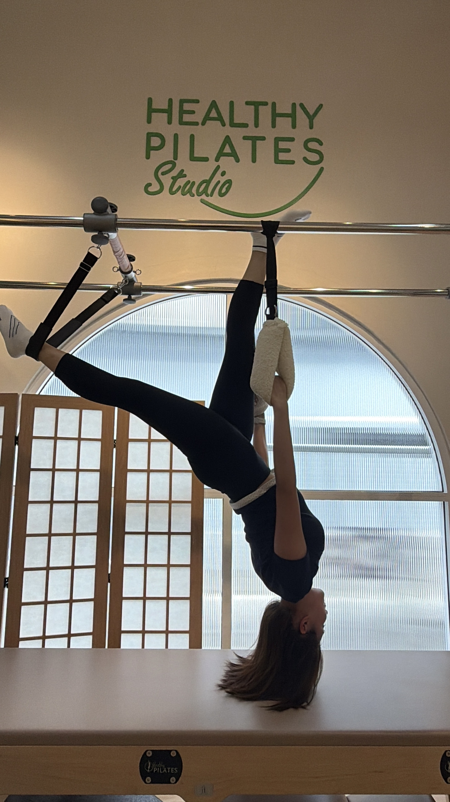

Activities and Interests

|
City Run |
City Run in Bangkok is a fun way to explore the city while also getting yourself up and exercising. Not only do you get to stay active, but most people also end up finding really good restaurants after running and meeting new people through the running community. | Learn more about City Run in Bangkok |
|
 |
Making Merit |
Making merit is something I enjoy doing as a Buddhist. I usually go to the temple with my family to donate food and other supplies. It is a meaningful way for me to spend time with my family, help others, and continue practicing Buddhist traditions that I grew up with. | Learn more about Buddhist Traditions in Thailand |
|
 |
Pilates |
Pilates is one of my favorite things to do in my free time. I enjoy doing it because it helps me stay active while also making me feel relaxed. I also love trying different types of Pilates and challenging myself with new moves. It is a fun way for me to exercise and take care of myself. | Learn more about me and pilates |